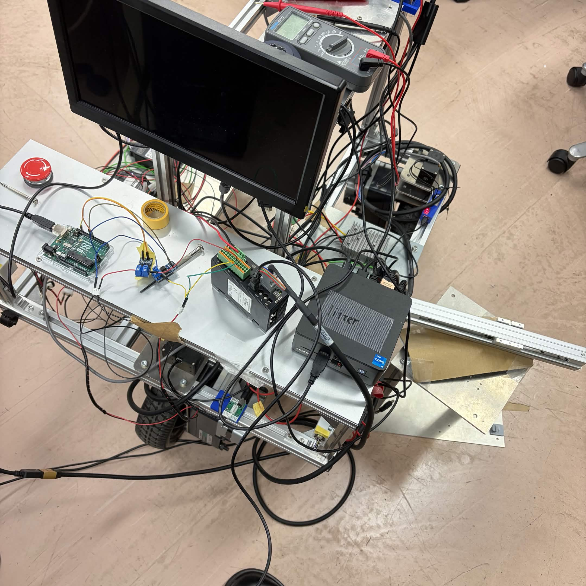
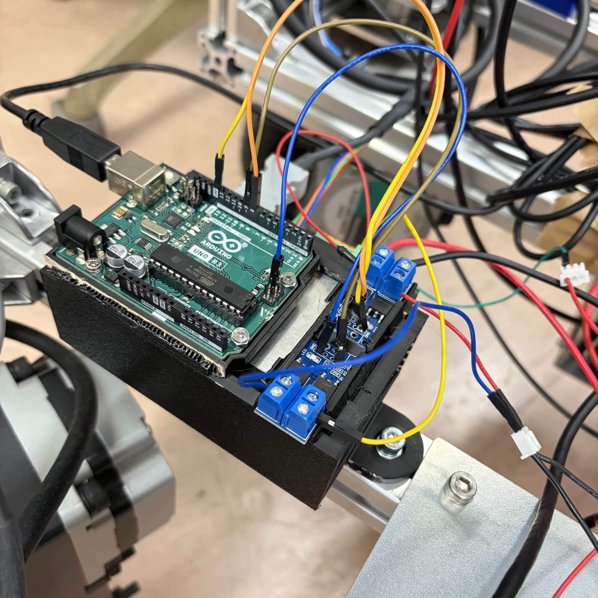
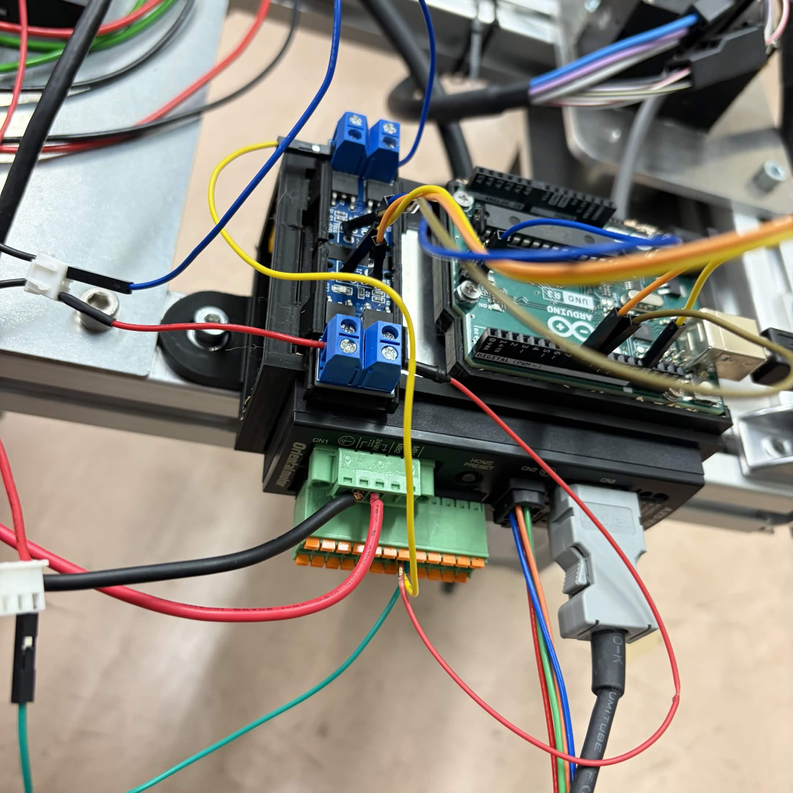
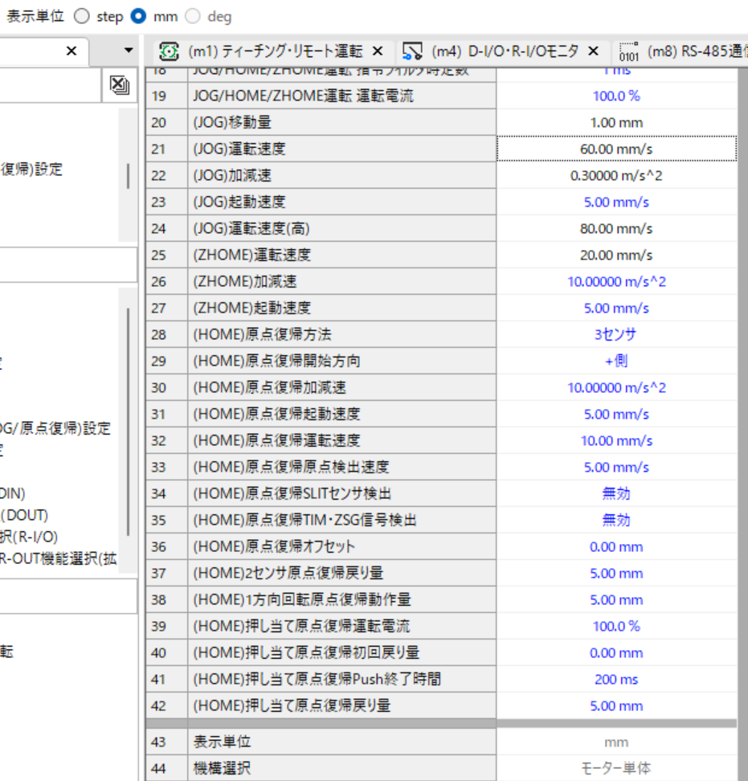

1. システム構成図
ハードウェアチェーン全体の接続フロー
ハードウェアチェーン
■ ソフトウェア
■ ハードウェア
■ モーター系
Ubuntu 22 PC（ROS2）
lift_serial_node / lift_joy_node
USB Serial（/dev/ttyACM0）
▼
Arduino UNO
lift_control.ino — UP / DOWN / STOP 受信
5V GPIO（D8 = UP / D9 = DOWN）
▼
MOSFET モジュール（×2）
5V 制御信号 → 24V 工業入力に変換（低辺スイッチ）
24V 工業入力信号
▼
AZD-KD ドライバー（JOG モード）
東方モーターステッピングドライバー — IN8/FW-JOG・IN9/RV-JOG
モーター線（CN2）+ ABZO エンコーダー線（CN3）
▼
EASM2XF020AZAK 電動スライダー
閉ループステッピングアクチュエーター（ABZO エンコーダー内蔵）
▼
ボールネジ昇降機構
実際の上下移動機構 — JOG 速度 60 mm/s
各コンポーネントの役割
| コンポーネント | 種別 | 役割 |
|---|---|---|
| Ubuntu 22 PC | Software | ROS2 実行、昇降コマンド送信 |
| Arduino UNO | Hardware | シリアルコマンド受信、GPIO D8/D9 出力制御 |
| MOSFET モジュール | Hardware | Arduino の 5V 制御を AZD-KD が認識できる 24V 入力に変換 |
| AZD-KD | Hardware | 東方モータードライバー、EASM モーターを実際に駆動 |
| EASM2XF020AZAK | Motor | ABZO エンコーダー付き閉ループステッピングアクチュエーター |
| MEXE02 | Hardware | Windows 上の一回限りの設定・デバッグツール（ROS2 制御とは独立） |
2. 制御ロジック
制御ロジック
ROS2 コマンド → Arduino GPIO → AZD-KD 動作のフロー
コマンド対応表
ROS2 コマンド
Arduino GPIO
AZD-KD 動作
↑ UP
D8 HIGH → MOSFET ON
D9 LOW
D9 LOW
IN8 / FW-JOG 起動
→ 上昇（正方向 JOG）
→ 上昇（正方向 JOG）
↓ DOWN
D9 HIGH → MOSFET ON
D8 LOW
D8 LOW
IN9 / RV-JOG 起動
→ 下降（逆方向 JOG）
→ 下降（逆方向 JOG）
■ STOP
D8/D9 両方 LOW
MOSFET OFF
MOSFET OFF
FW-JOG / RV-JOG 停止
→ 静止
→ 静止
🏠 HOME
ROS2 側で自動制御
DOWN → 下限 → STOP
DOWN → 下限 → STOP
自動ホーミング
position = 100.0 mm
position = 100.0 mm
注意： D8 と D9 を同時に HIGH にすることは禁止。FW-JOG と RV-JOG が同時 ON になり、ドライバーが異常動作する可能性があります。
3. ハードウェア接続
ハードウェア接続
実機配線図と接続仕様
📷 ハードウェア接続図

Arduino UNO → MOSFET モジュール → AZD-KD CN4 の実際の配線状態。2 系統の MOSFET により UP（D8）と DOWN（D9）を独立制御。
📷 3D プリンターホルダー

AZD-KD ドライバーと Arduino を固定するための 3D プリンターホルダー。
📷 3D プリンターホルダー

ホルダーの全体構成。マウント部と配線ガイダンス機能を備えた設計。
配線詳細 — UP 方向（FW-JOG）
| 接続元 | 接続先 | 備考 | |
|---|---|---|---|
| AZD-KD Pin17 IN-COM[8-9] | → | +24V | 低辺スイッチ方式 |
| AZD-KD Pin6 IN8/FW-JOG | → | MOSFET OUT- / LOAD- | MOSFET ドレイン側 |
| MOSFET VIN- / DC- | → | 0V（GND） | 電源 GND |
| Arduino D8 | → | MOSFET Signal / IN | 5V 制御信号 |
| Arduino GND | → | MOSFET GND | GND 共通 |
配線詳細 — DOWN 方向（RV-JOG）
| 接続元 | 接続先 | 備考 | |
|---|---|---|---|
| AZD-KD Pin17 IN-COM[8-9] | → | +24V | UP 側と共通 |
| AZD-KD Pin18 IN9/RV-JOG | → | 第2 MOSFET OUT- / LOAD- | 2番目の MOSFET |
| 第2 MOSFET VIN- | → | 0V（GND） | 電源 GND |
| Arduino D9 | → | 第2 MOSFET Signal / IN | 5V 制御信号 |
| Arduino GND | → | 第2 MOSFET GND | GND 共通 |
モーター・エンコーダー接続
| ケーブル | 接続先 | 備考 |
|---|---|---|
| EASM モーターケーブル | AZD-KD CN2 |
未接続時: ALARM 赤ランプ 8 回点滅 |
| EASM エンコーダーケーブル（ABZO） | AZD-KD CN3 |
接続後: 緑ランプ常時点灯、ALARM 解消 |
| 24V 電源 + | AZD-KD CN1 + |
主電源 |
| 24V 電源 0V | AZD-KD CN1 - |
主電源 GND |
4. ROS2 制御パラメータ
ROS2 制御パラメータ
lift_serial_node の設定値とトピック定義
制御パラメータ
| パラメータ | 値 | 説明 |
|---|---|---|
position_min_mm |
0.0 mm | ソフトウェア下限位置 |
position_max_mm |
200.0 mm | ソフトウェア上限位置 |
home_position_mm |
100.0 mm | 自動ホーミング完了後の基準位置 |
jog_speed_mm_s |
60.0 mm/s | ROS2 側で位置推定に使用する JOG 速度 |
auto_home_on_start |
true | 起動 2.5 秒後に自動ホーミングを実行 |
注：
/lift/position は ROS2 ノードが JOG 速度 60 mm/s を積分して算出した推定位置です。AZD-KD からの絶対位置フィードバックではありません。実寸との誤差評価が今後の課題です。
ROS2 トピック一覧
| トピック | 型 | 内容 |
|---|---|---|
/lift/command |
std_msgs/String | UP / DOWN / STOP / HOME |
/lift/position |
std_msgs/Float32 | 推定位置 [mm]（積分値） |
/lift/state |
std_msgs/String | 現在の動作状態 |
主要な起動・テストコマンド
# 昇降機構単体起動
ros2 launch robot_bringup lift_control.launch.py
# コマンド送信例
ros2 topic pub --once /lift/command std_msgs/msg/String "data: 'UP'"
# 位置・状態モニタリング
ros2 topic echo /lift/position
5. 速度テスト結果
速度テスト結果
2026-05-10 実施 JOG 速度達成確認
JOG 速度 60 mm/s 達成
当初目標: 50 mm/s → 目標超過達成。AZD-KD パラメータ 21 にて設定。
目標: 50 mm/s
達成: 60 mm/s ✅
速度テスト動画
実機にて JOG 速度 60 mm/s の昇降動作を確認した動画です。
6. MEXE02 設定
MEXE02 設定ツール
AZD-KD の一回限りのパラメータ設定ツール（Windows 専用）
📷 MEXE02 設定画面

MEXE02 は Windows 上で AZD-KD を一度だけ設定するためのツール。ROS2 制御とは独立している。
JOG 速度・加減速・機構パラメータ（リード / mm 単位換算）の設定に使用。
日常の ROS2 制御では MEXE02 は不要。
MEXE02 の主な設定項目
| 設定項目 | 内容 |
|---|---|
| JOG 速度 | 60 mm/s（AZD-KD パラメータ 21） |
| JOG 加減速 | 短距離での体感差が出るよう調整 |
| 機構パラメータ | リード設定により step → mm 単位換算を有効化 |
| 表示単位 | mm / mm/s / m/s² に変更（ロボットシステムに適合） |
| ALARM 確認 | Dio8 / Dio9 ステータス確認、緑ランプ常時点灯を確認 |
7. Joy-Con 操作
Joy-Con 操作マッピング
lift_joy_node によるボタン→昇降コマンド変換
ボタン割り当て
| 操作 | ボタン組み合わせ | 送信コマンド |
|---|---|---|
| ↑ UP（上昇） | L1（4）+ Y（3） | /lift/command: "UP" |
| ↓ DOWN（下降） | L1（4）+ A（0） | /lift/command: "DOWN" |
| ■ STOP（停止） | ボタンを離す | /lift/command: "STOP" |
確認方法： Joy-Con のボタン番号は実機で
ros2 topic echo /joy を実行して確認してください。Y=3、A=0 は暫定値のため、実機確認後に必要に応じて調整が必要です。
8. 今後の予定
今後の予定
残タスクと精度向上に向けた作業
実際の移動距離と推定位置の誤差評価
60 mm/s 積分による
/lift/position と実寸の差を測定・キャリブレーション。position_min / max を実寸に合わせて調整
実機行程を実測し、ソフトウェアリミットと AZD-KD ハード限位の間に十分な安全マージンを確保。